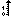
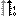

Introduction
eGiga2m is a web graphic data viewer.Data is supposed to be organized as a set of unevenly spaced time series.
Time series are taken from a web service which typically extracts data from a structured database or are stored in a CSV file drag-and-dropped on the plot area.
Each time series is identified by a unique name and by an ID. Time series names are displayed in a hierarchical tree.
Users can configure a wide range of parameters. All settings are interfaced through URI parameters. This allows to send unique links to graph or exported files and eGiga2m can be included or used by external resources.
Two graphic library are supported: Flot Charts has MIT license; Highcharts offers more features.
Time series are supposed to be saved on event base, so the value is assured to be within an (hopefully) tiny interval around the last saved value unless a new value is saved. that's why the default line style is 'step'.
Quick start
Users can select a time interval and one or more time series.A time interval span from a start point to a stop point. The stop point is optional, if not specified the default is now.
Both start and stop point may be a fix date-time or a relative interval (for example last 7 days).
Time series are presented in a tree structure. This tree can be navigated till the leaf level.
Clicking on a leaf a time series will be plotted on the left axis .
Clicking again on the same time series will switch the plot to the right axis .
Clicking the third time on the same time series will remove it from the plot
 .
.The "Show" button will create/update the plot using all the selected configurations.
Configurations
Link
Any eGiga2m plot is thought to be easily sent as a link and/or encapsulated in external web pages.In the "Link" menu there are a few methods to obtain such a task.
The "plot only" link doesn't show any control nor menu, only the plot area. In order to exit this mode just click over the plot.
The "plot and controls" link shows both the plot and the controls (i.e. menu, time selection widget and time series tree). If you click over the plot, you will zoom in the particular area you clicked onto. To revert the zoom just click on the back button "<" near the "show" button.
The "restart from scratch" link deselects all the options that has been selected.
The "multiplot" form splits the window into two or more sub-windows. Each sub-window can be split again in a recursive manner. Once split, each sub-window will show the same plot shown by the original (sub)window. By clicking over a sub-window plot, the controls allow to change the plot.
Export
This modal is used to export numerical data in a file. CSV, XLS, MAT and ITX file format are provided.In the case of CSV XLS and ITX format, all Time series are included in a single table, the first column is the merge of the timestamps of all Time series, the other columns are one per Time series; where undefined a time series is filled with a blank value unless you select the option to fill with the previous value or with the linear interpolation; You can choose to decimate Time series specifying the number of samples you want and the method used for the decimation. Maximum-minimum (default) will preserve all spikes, mean will remove (most) spikes, avg will keep average unmodified.
Time series names can be overridden filling the "TS Label" field. Each TS name must be separated from the following one by a semicolon ';'.
Plot creation isn't necessary before data export. I.E. you can just select time and Time series and click on export links without clicking on "show" button.
A CSV file includes all time series in a single table, the first row specifies the Time series names without almost any limitation (only semicolon is forbidden). Data is sent to the output file chunk by chunk as extracted from the database.
A MAT file includes each time series in a separate variable. The php2mat library has been included which implements the level 5 MAT format by MATLAB®. This format impose some restrictions on the Time series names in regards to length and admitted characters. In some cases the "TS Label" field may be useful. Data is sent to the output file chunk by chunk as extracted from the database.
An XLS file includes all time series in a single table, the first row specifies the Time series names without almost any limitation (only semicolon is forbidden). The PHPExcel library has been included. It is compatible with most versions of Microsoft© Excel©, OpenOffice™ Calc™ and LibreOffice© Calc©. If your version isn't compatible, please use CSV format. All data is loaded in memory and than is saved in a file. Memory limits may prevent the download of large files.
An ITX file includes all time series in a single table according to IGOR Pro© specifications.This format impose some restrictions on the Time series names in regards to length and admitted characters. In some cases the "TS Label" field may be useful. Data is sent to the output file chunk by chunk as extracted from the database.
If you are using Flot you can export graphs only in PNG format clicking the "export to png" button near the "show" button. If you are using HighCharts you can export in PDF, PNG, JPG and SVG from the menu on the upper left corner of the plot.
Config
This modal is used to configure maximum, minimum and logarithmic scale for Y1 and Y2 axis.You can show the numeric data in a table.
You can select the graphic library: Flot or HighCharts (if available). Only for HighCharts you can select the line style, too.
Decimation
There are a few options in order to reduce the number of scalar samples.- maxmin method splits the time interval in a given number of equal subintervals, for each subinterval two samples are taken: the minimum and the maximum; this is a non linear operation, affected by aliasing; spikes are preserved
- average method (avalable only on Export) consider the average of all samples in every subinterval; this is the easiest low pass filter used to reduce aliasing
- median method (avalable only on Export) all samples in a subinterval are ordered and the sample in the middle is taken; this is a non linear operation, affected by aliasing; spikes are removed
- downsample method; one sample per subinterval is taken; this is a non linear operation, affected by aliasing
Events
Events are shown as icons inside the plot area.Events are organized in sets, each set normally has it's own icon.
For example any of these set of events can be supported: errors (identified by
 ), alarms
(identified by
), alarms
(identified by  ), commands (identified by
), commands (identified by  )
and buttons (identified by
)
and buttons (identified by  ).
).Events are available only if supported by the plot web service (see below).
Errors are the only set of events recognized by eGiga2m. The label of the time series is added along the description. Errors are shown by default, all other events must be checked in the "Config" modal.
Events can be hidden/shown by clicking on the legend.
A filter can be attached to any event. Only events whose description will fully match the filter string will be shown. Case sensitiveness of filter match is dependent on database and web service settings, normally it is case unsensitive. If you want to match only a substring of description you can use wildcards (*). E.g. *voltage*.
Events are available only for Highcharts installations.
Search
This modal is used to search in the time series full name list. The '%' character is the jolly as in SQL.Drag-and-drop
There are two areas where some content may be dropped on.The first one is the tree area. Here the name of a time series can be dropped. Now only the QTango drag XML content is parsed to extract the attribute FQDN. If the control ('ctrl') button is pressed at the drop moment the new time series name is added to the tree, otherwise all previously selected time series will be cleared from the tree.
Also the plot area can receive a drop, but in this case it should be a CSV file containing data in the same format of the CSV file exported by eGiga2m. I.E. first line contain the label "time" and the list of all the time series name; all the following lines must contain date time in format YYYY-MM-DD hh:mm:ss or timestamp an the value of all time series (empty if undefined).
Arrays
The leaf icon switch is different for arrays time series.Clicking on an array time series will produce a surface plot . (WebGL support requested)
Clicking again on an array time series will produce an animation .
Clicking the third time on the same array time series will plot each element of the array as an independent scalar time series .
Clicking the fourth time on the same array time series will remove it from the plot
.Only one array time series can be displayed at once. If necessary use the "multiplot" feature.
Web services
eGiga2m core is composed by a monolithic JavaScript file and a few HTML files, a few JavaScript libraries are included. It is interfaced to 3 web services trough a JSON interface.The first web service is in charge of populating the hierarchical tree of time series names. The tree is loaded dynamically, so a number of call are necessary.
The second web service is in charge of providing data necessary for the plot
JSON interface is composed by the following schemas:
- tree root request explore the root level of the time series tree
- sub-tree of a node identified by key request explore the sub-tree of a given node
- name associated to key request obtain the name of a time series associated to a given key
- search for a name request search for all time series whose name contains a given string
- tree expanded to a set of time series request explore the root level and expand till the leaf level all sub-trees containing any time series of a given list
- plot request return data necessary for plotting each time series.